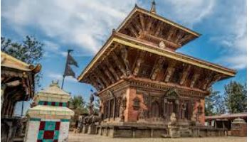
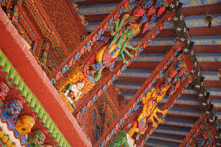
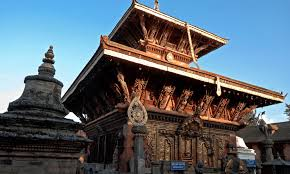
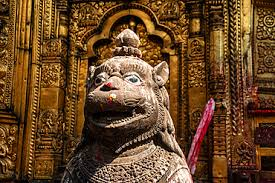
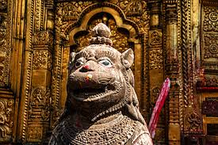

HISTORICAL
PEACEFUL
E-Library for the
NEPAL Nepali Students
E-LIBRARY
⚲
Home
Historical Thinking
Browse History
About

Welcome To Nepali E-library

The Changu Narayan Temple is a UNESCO World Heritage Site and is perched atop a small hill to the east of Kathmandu in Bhaktapur district. It is one of the best known Vishnu - Narayan is another name of Vishnu - temples in Nepal and is visited by a large number of devotees especially during Harishayani Ekadashi in the month of Ashadh and Haribodhini Ekadashi in Kartik, over the four month period when Lord Vishnu is supposed to retire to sleep. At the front of the temple is a beautiful statue of Garuda dating back to 5th century Lichchhavi period. This Garuda is unique in that it resembles a human being except that it has wings unlike other Garuda statues found elsewhere. The Garuda is the baahan (carrier) of Lord Vishnu, and it is interesting to note that all Vishnu temples have the celestial bird seated on its knee with folded palms in front of the temple.
changunarayan Temple
changunarayan Temple Specility


 
